实际上我是2011年参加的高考，到现在大概九年多一点时间。不过因为种种原因，求学之路暂时告一段落，自己踏入社会工作岗位也有大半年的时间（如果研究生毕业以后漫长的在学校打工不算是严肃意义上的工作的话），赶在这个时间点，对自己的求学路做一个总结，给十年前的自己作一个交代，也希望十年后的自己能看到这篇文章聊作谈资，话说回来，我还真是很好奇十年后看到这篇文章的你，过得好吗？
我有隔一段时间就写总结的习惯，从刚上网的时候的百度空间，到QQ空间，到把朋友圈当公众号，但是我在写这篇文章之前只翻了翻手机相册，并没有参考原来写过的文字，一个原因是于往之不谏，另一个原因是现在还记得的大概是最珍贵的。记忆当然有偏颇不实之处，尤其是人容易美化自己的成就，所以各位看官辩证看待就好，但是无论如何那也是自己宝贵的财富吧。
这些故事本身是想跟自己的她慢慢讲，显然她来得有点晚，不过2020这个数字比较有仪式感，那还是发出来好了 :)
长春 ① (2011.9 – 2012.4)
2011年我参加高考。考试之前对高考其实没有任何感觉，因为自己的模考成绩不稳定，而且也是被班主任放弃的那一批学生之一，在考完以后连分数都没估就出去玩了，最后的结果还是蛮戏剧性的——599，当时省一本线是534，这个分数大概是能上一个省内211选不错的专业的水平。最后填报的志愿我记不太清了，大概有川大跟湖大（这两个学校好像提档线都没上），一志愿是吉大。当时安徽是6个平行志愿，第一志愿填了“信息与计算科学”（计算数学），后面物理金融瞎选一通，然后用生物工程补上了最后一个空位。非常巧的是最后录取的时候我只录到了第六志愿，生物工程专业。说非常巧是因为后来我才知道当年安徽有一个跟我考一个总分的哥们，排名比我高，第一志愿也是计算，我是报这个专业的排名第三名，就一路滑档到了第六志愿。
语文选择题最后几分钟改了一个选项让我没有录取到自己的第一志愿，并且改变了我人生的轨迹。
我被录取到了时吉林大学生物与农业工程学院生物工程（生物资源）专业。当时的日子我已经记不太清了，只记得自己本不擅长画图，要花一个下午在制图室画大图；只记得上分析化学和无机化学对着照本宣科的老师不知道自己为什么要在这里浪费时间；只记得学长学姐说考研工作该怎么准备的时候，心里想你们学这个专业没有任何前途，为什么要浪费时间学一些没有任何用的东西（对，当时就是这么想的……有幼稚的成分在里面）。人对自己不愉快的记忆总是刻意回避的。当别人开始享受大学时光参加各种社团活动，或者忙着讨好辅导员为了四年以后能保到本校这个垃圾专业的对口专业接着读自欺欺人的研，我已经在打听转专业的范围并且开始准备了。当时也想过走不掉怎么办，有几个晚上都是在快要崩溃的边缘度过的。后来跟一位朋友打电话聊天的时候被一语点醒：你反正都是要去考试的，你要考得上你现在这些担心都没有任何意义，你要考不上就到时候再说嘛。我已经不太记得当时是谁跟我说这些话的了，但是我到现在都非常感谢他。
为了争取到转专业的名额，我必须去学习一些自己很讨厌的课，这样才能拿到参加考试的机会。我觉得这个制度是非常不合理的：要转专业出去自然是不希望呆在这个专业，你让别人还花时间在这里是何苦？
事实证明大一的时候还是要养成良好的习惯。我虽然非常讨厌自己学的专业课，但是为了拿到转专业的名额必须逼着自己去学，于是每天晚上都呆到图书馆/教学楼关门，后来准备出国，考G考T，这个习惯保持到了大学毕业。
第二学期开学我们的高数课换了一位老师D，D老师改变了我的人生轨迹。当时的高数课老师因为一些私人原因休了一个学期的课，适逢D老师从美国访学回来，学院便安排D老师去上我们的高数课。D老师的教学方法和专业基础我并不是特别欣赏，坦白来讲数学科班毕业的D老师讲高数课很多东西都没有讲明白，但是D老师描绘的美国的天堂一样的生活还是很吸引年幼的我。在D老师之前我从来没有动过出国的念头，直到D老师一语点醒梦中人：老美很大方的，你出去读书可以拿奖学金，完全不用家里掏钱。从今以后我开始关注起留学方面的信息，然后又是机缘巧合当上了当时全国最大的在线留学交流平台——寄托天下论坛的版主，认识了更多一起出国奋斗的小伙伴和已经在国外留学的前辈，弥补了信息差，这直接促成了我后来DIY申请4个国家十余个的研究生项目而没有给留学中介掏一分钱，并成为我主导编写吉林大学2015版飞跃手册的契机。
2012年的春天，我参加了学校组织的转专业考试。第一志愿自然报的是计算数学系。印象最深的是那时候报的最多的专业是车辆工程（也是我们学校的王牌专业），那个时候计算机系的分数还没有现在这么夸张（我的分数如果填了计算机就直接上了）。当时全校进入复试的有4个人，录取3个，但是有一个人复试没来，所以我就直接躺着进了计算数学系。
春夏之交，收拾行囊，告别自己呆过大半年的地方，原长春汽车拖拉机学院，现吉林大学南岭校区。

长春 ② (2012.5 – 2015.6)
写这篇文章的时候才发现自己平时不怎么好好拍照片，现在想找一张南区的图都不好找，放一张图书馆的。
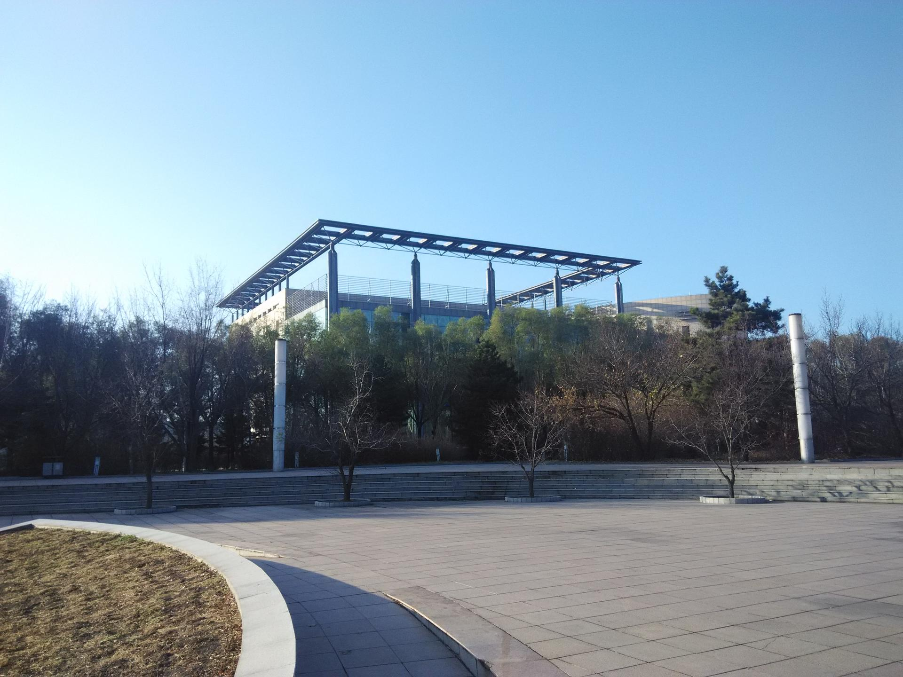
进了新专业以后第一件事自然是补课。当时辅导员问我是要延一年还是直接去参加数学系的考试，我想也没想表示拒绝延期毕业（当时跟我同时转专业去的另外两个同学也都没有延期，他们的本科成绩后来一直都保持得很好，最后都保送了）。如果不选择延期毕业就意味着大一下学期要补大一上学期数学系学的课程，并且大二下学期要考6门数学专业课（补大一上学期的课）。
数学系学的数学和工科学的数学完全是两个套路。我第一次翻开数学分析的时候基本处于每个字都认识一句话连在一起就看不懂的状态。这个时候我认识了人生中另一位贵人，W神。怎么认识W神的我委实记不清了。当时W神让我从菲赫金哥尔茨的《微积分学教程》开始看。于是立刻从桂林路同仁书店搬了一套回来啃。我能记得桂林路同仁书店是因为我在这家小书店里消磨了太多的时光。大一军训的时候同仁书店来发打折卡，无限次85折（就是这么简单粗暴，打折就完事了，现在没有套路的打折卡基本绝迹了），我靠着这张打折卡整个本科阶段有事没事就去同仁书店淘书。印象中很多年前看了个新闻，这家店似乎已经不在了……老毛子写书的风格非常苏联，非常厚并且有大量的习题。这套书有效缓解了我完全看不懂自己本科教材的尴尬。靠着这套书苟过了大一第一次期末考试。
大一上学期忙着转专业，大一下学期忙着补课，并且计划了考G考T。整个大二大概也都在忙着补课和准备GRE。准备GRE的时候的作息差不多是5点50起床，夏天骑车冬天走路。东北的冬天是很夸张的（不过我后来去了比东北更冷的地方，那是后话），下一场雪以后自行车就扒不出来了，并且地面非常滑只能走。因为早晨起床比较早所以不会跟人抢厕所洗漱台（我回忆了一下大学四年几乎没有跟人抢过厕所，因为起的太早了……包括现在工作了我去食堂也从来不排队，因为去得早没人跟我抢嘛！），本科的时候宿舍在学校外面，要穿过一个小区才能走到学校东门，整个校区是东西方向的矩形，大概6:40走到食堂赶上食堂开餐。刚开餐的时候饭菜还是热乎的，阿姨给的也比较多，而且想吃啥吃啥，算是一个福利吧 :) 。吃完饭继续往图书馆走，大概7点出头到图书馆，图书馆刚好开门，进去背单词。日复一日坚持到了考托福结束，唯一的区别就是走路上听的东西，考G的时候听陈琦的3000词还有鸡血音频（那个音频我已经找不到了，不过里面最让我印象最深的一句话是“你说你睡什么睡你又不是跟别人一起睡你睡那么多干嘛”），考T的时候听NPR和科学美国人60秒（这些材料的语速足够快，并且词汇足够多）。
这里还要特别感谢一下我的室友们，能容忍我这么早起床有时候还会把他们吵醒，要对他们说一声对不起。
第一次考G的时候已经记不得了，只记得整个人太紧张，曾经一度弃考（其实最后verbal也有150），考完以后整个人差点崩溃。这个考试直接给我留下了心理阴影，以后就算是期末考试如果碰到不会做的题目都会想到这课考砸会直接影响自己的GPA，可能就申请不到自己心仪的学校，然后就心跳加速血压升高。现在回想那个时候的自己确实是很幼稚的，可是我也不会忍心去嘲笑一个拼命努力又患得患失的自己。
嗯，本科四年唯一一次哭鼻子不是什么失恋（当然也没有），而是大二有两门数学课考砸了……
整个大学的寒暑假几乎都是在准备考试中度过的。第一个暑假去新疆度了个假，回来以后被W神数落了一通说你居然还有时间去度假，幡然醒悟，后面的寒暑假几乎在家都没呆过几天。
因为转专业还要准备出国，我不可能跟着数学系的学生按部就班一起上课，我有比他们多一倍的课业量，他们上课讲的内容我也听不懂，于是从大二开始养成了能自学的课全部自学，后来大三的时候泛函分析期中考试之前我已经把整本书的课后习题全部做完，期末拿到了90+分（不过不得不承认我们的泛函分析考的很简单）。为了在短时间内跟上课程进度，并且兼顾到自己的GPA，我买了个小的横线本，每一根线代表一个时间块（大概是1个小时），每天的学习任务大概是从7点到晚上11点，中间划掉几个吃饭，休息和体育锻炼的格子，剩下的时间填上科目和要看的书/要做的习题。能不去上的课尽量不去，去上课只有两种情况：这个老师点名，以及这个老师的课确实值得听。所幸那时候的母校还算人才济济，CY老师的实变函数，LHL老师的数学分析，LYH老师的PDE数值解，H哥的复变函数和拓扑，XL老师的微分动力系统都是我会认真听的课。（也就是剩下的课我一般都不去听了……）。当时为了充实自己的课程列表申请数学系研究生，我跨专业选了纯数学系的微分动力系统和拓扑学，后来我发现我的成绩虽然不是我们那一届中比较出彩的，但是我的学分是我们那届最多的 :)
当时一天最开心的时候大概就是早晨吃到食堂热腾腾的第一锅包子的满足感，以及晚上图书馆闭馆的时候听着背景音乐（一般是萨克斯的《回家》）结束一天的学习的充实感。

这里是另外一个我经常上自习的地方，李四光楼。

本科四年可以说是我人生前26年最充实最快乐的时光。充实是因为身不饥寒，天未曾负我，学有长进，我对得起天。快乐主要是来自两个组织，跨学科沙龙和吉大出国党。
跨学科沙龙是CC学长（另一个改变我人生轨迹的人）和另外两个大神0X年的时候创立的一个地下组织，刚开始只是几个热血青年每周抽出来点时间聊天，天文地理哲学无所不聊，后来变成每期一个固定的主题，由一个主持人做分享，剩下的时间大家自由讨论提问的形式。
我记不得是怎么知道这个组织的了，大概是看到了人人主页（当然，人人已经黄了）。因为是地下组织（没有在社团注册），百团纳新的时候找了半天都没找到在哪里，后来还是联系上了当时的一个负责人才加入的。我帮助运营这个组织直到自己毕业，后面交给了自己的学弟学妹，但是听说现在基本上已经不办活动了，感觉自己没有选好接班人，到现在都很内疚。
当时活动做的比较大的时候每次能有二三十个人来参加，常客有十几位，每半个月举行一次活动，一般是安排在周日晚上18:30，持续一整晚直到大概22点大家一起踏雪而归。因为不是正式注册的社团，所以连找活动教室都颇费心思，有种死亡诗社的感觉……幸运女神再次眷顾了这些有梦想的孩子。有一次活动某学院的L老师来参加，并且充分肯定了我们的努力，于是后面我们每次活动都会打着L老师的旗号去某学院借讨论班的钥匙，这个福利一直持续到了我毕业。
从硬盘翻出了一些当时的活动PPT：
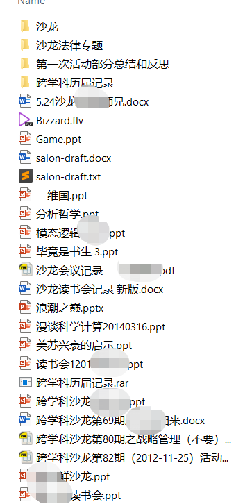
下面是大四毕业前夕沙龙安排活动的时候心血来潮拍的合影。
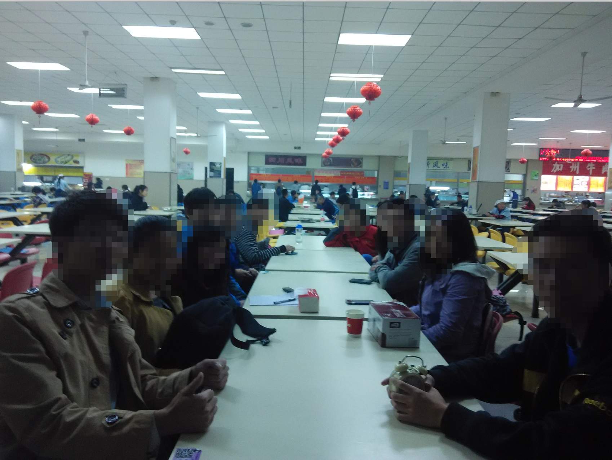
沙龙对我的意义不光是发现了这个学校里的一些有趣的热血的人，而是结交了很多知心的朋友。聚是一团火，散是满天星，现在的沙龙人在世界各地为了自己的小梦想继续奋斗，你们还好吗？
大三结束以后忙完了各种出国考试，开始申请。这个时候我已经在寄托天下论坛当了1年多的斑竹，就想着人多力量大，拉上吉大在准备出国的小伙伴组了个群。从报offer到准备签证，群里的小伙伴群策群力互相照应，这也是一段很宝贵的回忆了。
后来机缘巧合通过出国党的朋友认识了K神。K神是14届吉林大学飞跃手册的主编，写了整本飞跃手册的大部分内容。等我们出国党的同学陆陆续续拿了offer以后我也萌生了修订飞跃手册的想法。说干就干，从K神那要来了14届飞跃手册的底稿，找JS姐要了张封面图就开搞。
当时定下的基调是整本书主要是我来基于自己两年的留学论坛斑竹经验进行修订，剩下的语言备考签证准备找了出国党另外几个大佬写。为了对比上一版有实质性的进步，我们制作了一章收集当时全校40余个学院大多数出国的人拿到的offer（这在以后的飞跃手册里几乎是做不到的），又加了一章叫海外校友访谈录，邀请已经出国的学长学姐给我们分享经验。
这里致敬给我们回复的各位学长学姐。顺便一提访谈录中的CHX学长，在给我们回复以后两三年因来自变态导师学术造假的压力在美国放弃了自己的生命，希望你在天堂过得好。
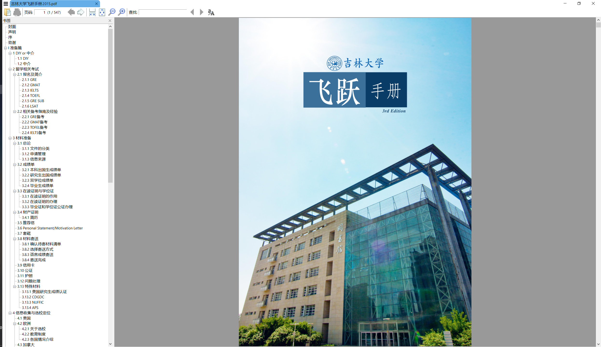
Canada (2015.9 – 2018.10)
2015年秋天，温哥华经转，我来到了加拿大可能是最冷的“大城市”——萨斯卡通市（萨屯），录取为萨省大学计算机系硕士生。下图是学校主楼（Nobel plaza，当年化学系出了一个诺奖）

顺便乱入一张温哥华拍到的豪宅，在去UBC的山路上

当时选这个offer考虑了两个硬性条件：奖学金和学科。当时因为没有坚决申请计算机系的硕士，到offer下来以后意识到数学博士我是真的读不下去，最后就只有一个选择了。

这差不多是萨屯典型的景象了……在这种地方确实是十分适合学习的，因为几乎没有娱乐活动。不过现在想想当时真的是有时间没钱，现在是有钱没时间。没有在读研的时候多跑出去看看还真是有点遗憾的。
研一主要是上课。当时到了屯子也没有什么朋友，中国人也不是特别多（整个计算机系同届20多研究生只有我一个中国人），这点可能是在纽约多伦多之类的大城市呆多了的留学生不能想象的。浑浑噩噩上了一学期课，跟身边的人也大多玩不到一起去。出了国才理解了三教九流是什么意思。在这种比较一般学费便宜的公立学校读书，不比顶尖学校的顶尖专业，大多数人来只是为了混个文凭然后移民。那时候（15年）国内的舆论环境是非常差的，想移民的人非常多。本地华人群体也没法融入，不是轮子民运逢中必反的老华人，就是花天酒地老子牛逼的富二代，跟这些人价值观和消费观差异巨大，完全玩不到一起去。那段时间每次想到自己要在这样的地方度过两年就觉得绝望。
转运发生在研一下学期。上Keil教授的计算几何课机缘巧合认识了几个工程系的研究生朋友，这也是我在屯子最宝贵的财富。下面这张图摄于我们聚会的大本营，萌萌哒QQ的家，19 Mitchell Street.。
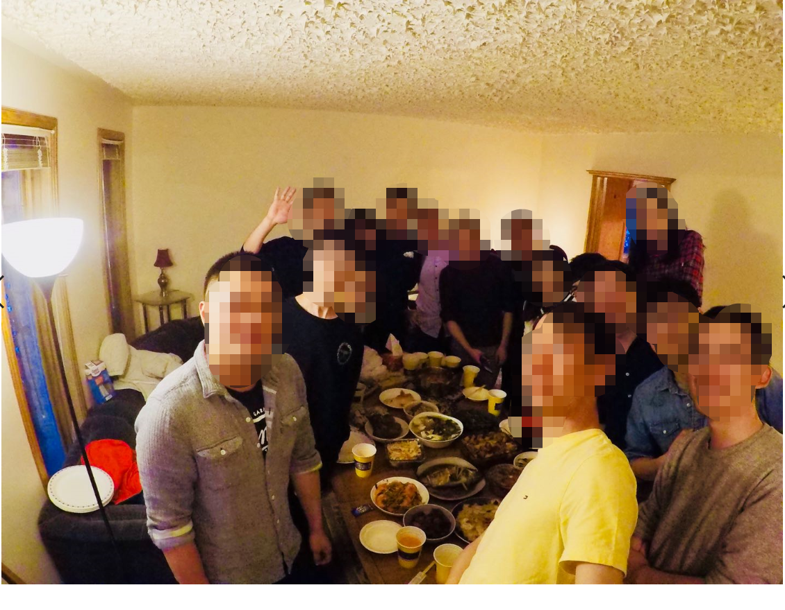
圣诞我们在这里，元旦我们在这里，农历新年我们也在这里；我们一起涮火锅，吃烧烤，搭过帐篷上过山，组过车队渡过河。
相似的人总是相互吸引的，虽然我比大家都二了很多，但是跟他们在一起我真的很开心。我们有相似的背景，聊不完的话题，聚不完的聚会，这一定是上天安排来拯救我的生活的一群天使。
一起去过加拿大（可能是北美）最美的国家公园：

一起消灭异国他乡过不了农历年的孤单：

一起穿越美加国境线：

……
我在屯子里的快乐都是他们给的。
屯子的生活以现在的眼光来看是比较艰苦的。因为地处加拿大大平原中间，维度跟漠河相当，冬天可以有零下50℃的体感温度。到了加拿大我才知道体感温度和气温是两个东西。下面这种新闻我都看麻木了，内心没有任何波澜：
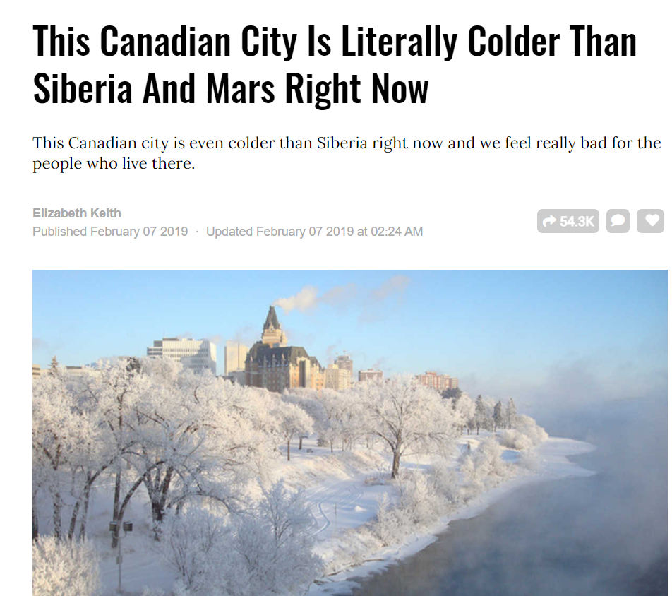
极度的寒冷真的是可以冻死人的。我印象最深的是有一次高速开车滑到了雪沟里（这里顺便提醒一下，暴雪天气不要开车上路，上路都不可以，警察是不会救你的，因为他们也怕死），雪把整个轮胎都盖住了。这个时候神奇地有一个大哥开皮卡路过，把我们一车人捞到了镇子上。这个救命恩人我只知道他叫Lance，没有他的出现我就不会坐在这里写下这些文字了。
除了极度寒冷以外国货贫乏也是一个问题。大城市的留学生可能很难想象我们这些村里的留学生吃个烤鸭都要拍照发朋友圈的幸福。因为要买烤鸭，必须开车单程600公里去旁边最大的城市Calgary，那里有大统华连锁超市，有相对正宗的中餐。我们每次去Calgary的流程一般都是，先处理一些必须处理的事务，然后中午在小肥羊吃一顿火锅（也就只有在加拿大还有人会吃小肥羊这种垃圾食物……），小肥羊旁边有大统华，在大统华里把后备箱塞满，然后一路开回萨屯，到家刚好晚上八九点的样子吃晚饭，一般是热一热大统华带回来的卤味，屯子里买不到的那种。
因为国货匮乏，所以小地方的中餐价格很贵并且变态地难吃，吃那些中餐是对自己的钱包和自己的胃的侮辱。于是只好走上了自己中午带饭的路。
出国之前十指不沾阳春水，刚开始几天做出来的饭是这个样子的：

坦白来说很难吃，并且并不会因为是自己做的饭就变得好吃一点——不存在的。每次吃自己做的东西都有种吃一勺就饱了的感觉……
不过做饭这东西说白了就是刀工火候再加一些小技巧。油盐酱醋热油冷油后来越玩越转发现做饭并不成为一个问题了。那个时候还没有王刚老师，不过如果跟着美食博主做饭肯定会进步更快一点。后来韭菜盒子手擀面包包子都是常规操作了：

后来还写了些心得什么的（这是一部分）
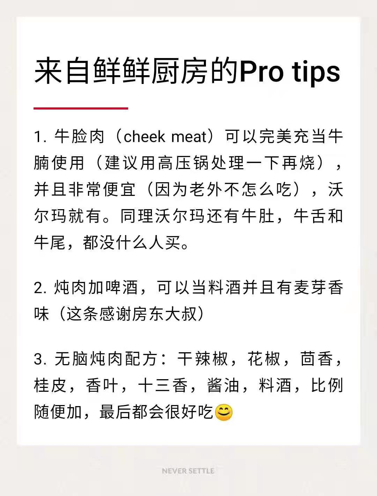
所以害怕做饭的朋友，你看我刚开始做的那能吃吗？都有一个进步的过程嘛，相信自己💪
2017年11月完成硕士答辩，这个时候其实我已经在half-time工作了，工作地点是大学园区里的一家百余人规模的小公司（后来被西门子收购了，我也算是半个前西门子员工了）。然后就迎来了人生第一次被炒鱿鱼。具体的过程略过。
炒鱿鱼之后我面临的最大的问题来自于经济，由于我已经在供车贷了（顺带提一句当时没有任何理财意识，工作之后直接贷款买了一部新车，这是典型的资本积累初期给自己增加负债的错误举动），每个月还贷都很多钱，经济压力一下子爆炸。幸运的是失业一个月后我硕士导师给我在学校找了份临时工的职位，勉强维持住了经济平衡。但是由于车贷的存在每个月还是没有任何结余。
失业又没有工作的那阵子我是很消沉的，但是这种消沉没有反应在行动上。事实证明让自己最快从痛苦中走出来的办法就是忙起来。
我在失业的第二天就打开了Leetcode开始刷题。一开始是用Python写，主要是为了找工作，后来用C++写，为了练习一下C++。Leetcode这东西其实我也不是硬写，因为首要目的是找工作，所以我的做法是先把答案背下来，然后反复AC。刷题这事很简单，背就完事了，别问，就背。熟能生巧的东西，到后面写个什么BFS/DFS闭着眼都能写出来。
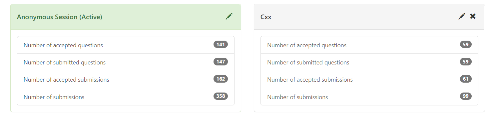
同时我注册了能找到的所有招聘网站的账号，以每天20-30家公司的速度投简历。找工作这件事操作起来真的很简单，投就完事了，别问，就投。
有人会问这么多申请怎么管理？做个excel就好了嘛。公司名称，链接，账号密码，备忘录，申请状态（涂色）。我申请研究生的时候也是这么做的。
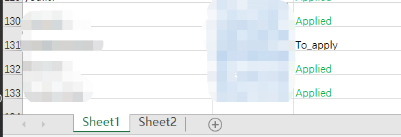
最后也拿到了一些大大小小的面试，但是由于专业实在是不匹配，再加上我投的范围比较集中，一直没有理想的offer。
找工作这事儿不难，找到好工作不容易。也有朋友劝我去学学前端学学JS（当时JS确实非常好找工作），我没有听，因为让我去撸前端框架我觉得是在浪费我的时间。当然这个理由听起来很酷，主要还是因为失业的时间并不长自己也还有一些银行存款，后来又有大学的临时工作可以接济一下我窘迫的经济，我就把所有的精力放在自己感兴趣的方面了。
从大四被W老师领进图形学的门，到研一选了Stavness教授的Computer Graphics，我越发觉得that’s it，这就是我想要的东西。研一下学期的时候在没有任何Publication的情况下申请了北美的一些graphics方向的PhD，最后以团灭告终，这也是我硕士毕业去工作的原因。
在学校打工的日子我白天帮硕士导师处理一些数据，写一些文档，晚上边刷Leetcode边补计算机基础。那段时间看完了Structure and Implementation of Computer Programs，刷完了Udemy的现代C++课程，看了一部分reinforcement learning的东西。为什么要看RL还是因为CC学长。当时CC学长听了我的遭遇，帮我联系了一位教授要跟着他做东西（虽然最后不了了之），这是CC学长第一次在我人生的黑暗时刻给我亮起了一盏灯。这段时间顺便认识了F神（另一位贵人）和几个做图形学的小伙伴，开了一个知乎专栏（GraphiCon），写了一些七七八八的东西。在这个专栏的号召下我们这个图形学小讨论组人越来越多，后来中科大的L老师接了过去，走了专业的运营，成立了GAMES-CN图形学交流论坛。我也可以说自己是半个GAMES的创始人了哈哈（太不要脸了）。
有一次机缘巧合联系了一下美国的K教授（捷克佬），K教授表示自己手里有一些funding，问我有没有兴趣，不过要先做个题。我表示challenge accepted。用了F神提供的代码框架大概在一周的时间内做了出来，拿到了K教授的offer，办签证准备去美国。
当时有阵子还急着卖车，后来有个朋友说可以陪我自驾过去，于是果断收拾行囊，走他娘。当时的路线是这样的，3天走完：
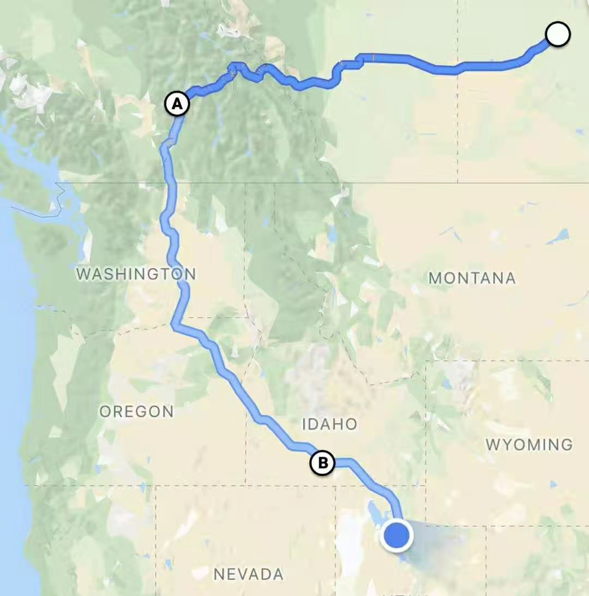
2019年秋天，我来到了美国。
U.S. (2018.10 – 2019.8)
在美国的经历并不是很愉快，愉快的记忆主要来自于我那欢乐的房东大叔一家子，来自于走过的美国的一些河山。去加州面基了CC学长和JS姐（是被CC学长甜美爱情酸到的旅程！nice的人总是有好运，我是很相信的），去德州面基了YC学长，顺带学习了德州的历史（写过一篇文章，回头贴上来）。去过几个国家公园。在美国旅游才能体会到自驾的乐趣。
放几张图吧。
黄石国家公园棱镜温泉
Texas constitution
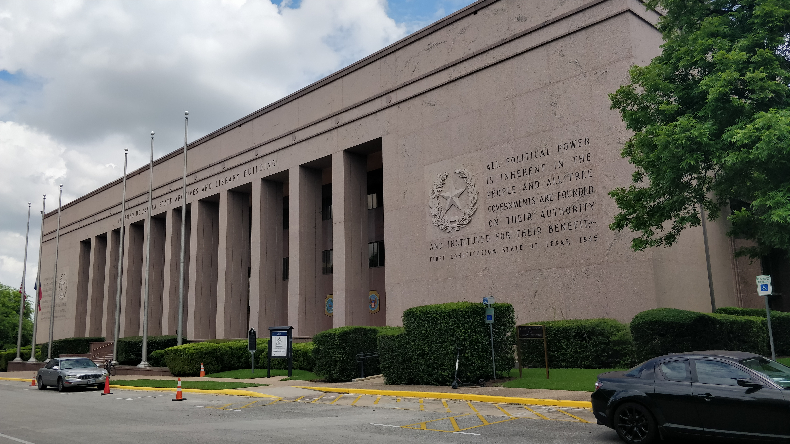
Bryce Canyon Nation Park
Zion National Park（这是我觉得我见过的美国最美丽的国家公园）

也跟保加利亚小哥熬夜赶过SIGGRAPH（虽然没有投中）。我想我最大的遗憾是一个做graphics的人没有SIGGRAPH吧。
最后和捷克佬明面上和平分手，实际上不欢而散。具体的原因和过程写过文章于是我便不再愿意回忆，我一向不是一个喜欢归错给别人的人，我当然是因为没有强到让他离不开我，只好自己离开。我是捷克佬评上tenure以后被开掉的四个学生的第三个，我走之前警告过我留下来的两个中国同学，说我觉得捷克佬早晚要跑路，一年以后他真的扔下他的学生跑路了……
从这件事情以后我就对变态导师留下了心理阴影，读研一定要选自己知根知底的导师。
当时被通知开除的时候，经过在加拿大失业的打击，我心里是有准备的。他通知我没有funding了以后我面临的最大的问题是签证问题。我的美国签证如果没有funding的支持我就要立刻滚蛋，这个时候距离签证失效还有20天（嗯对，捷克佬当然doesn’t give it a shit，whatever，你滚了关我叼事:) ）。
我在第二次失业的头三天做了如下事情：联系了我的一些朋友帮我联系各种机会，因为我需要money；报名了半个月以后的雅思G类考试，如果美国签证失效我可以直接考雅思拿枫叶卡回加拿大（当然实际操作比这个要复杂一些）；去联系学校学生处申请签证续期。
几天后，学校签证处回复让我补交财产证明就可以了，这给我争取了一两个月的缓冲期；
一个星期后，硕导说你想回我这里干活随时欢迎，拿到了保底offer；
半个月以后，考了个G类雅思，在只准备了不到一周的情况下考到了8分，并且单项全部过线，达到了枫叶卡的要求；
三个星期以后，CC兄帮我联系到了浙大的机会，同时F神给了我一个课题说可以让我先做，我权衡了一下准备回国；
可以说没有CC兄和F神的帮助，我走不到今天。
2019年9月，我买了单程机票，经转西雅图落地上海，我回来了。
2020年1月，新冠爆发。我希望我在美国和加拿大的朋友一切都好。
结语（2019.10 – 现在）
到了杭州以后我一边做F神给我的课题，一边准备申请2020FALL图形学的PHD。我的经费来自于YY老师。这里要特别感谢YY老师让我瞎折腾而没有给我任何KPI，这可能是我最应该珍惜却没有拼尽全力去努力的一段时光，我还是蛮后悔的。
当然最后还是因为越来越激烈的竞争以及我本身并没有图形学的publication，再一次全军覆没。那个时候疫情在家，知道这个消息的时候是一天的中午，我还记得那顿饭我和爸妈都没怎么说话，爸妈一直说没事的你做什么决定我都支持，我却觉得自己这么折腾下去是对父母的不负责任。
然后又双叒叕开始找工作……
幸运女神再一次眷顾了我。一个月以后我拿到了国内某厂的offer，做引擎技术支持，也是我很感兴趣的课题。
2020年4月，收拾行囊，来到了深圳。
每次我被生活重重摔打的时候，都会被人拉一把。我不知道这是幸存者偏差，还是我的运气真的很好（我想应该不是，否则就不会失业这么多次了:) ）。
但是Anyway，我还在这里 :)
10年时间，无数人走进了我的生活，因为各种原因，有的人在中途下车，有的人仍然在我身旁给我鼓励和支持。无论这些人在我的身上留下了什么，我都会感谢你们。凡是过往，皆成序章。
在美国的时候有一次跟房东大叔一家喝酒，我不知道怎么回事情绪突然有点失控，觉得自己都这么大了还是一事无成。房东大叔说，你看我儿子那个冰淇淋店，你说他能赚钱吗？咱就是没赚到钱咱还过了老板瘾呢。回过头来我理解了房东大叔的话。好的经历，坏的经历，这些都是我的财富。
10年时间，我懂得了什么是悦纳自己，要相信自己的决策，自己的路自己走，如果没有路就自己开一条出来；
10年时间，我懂得了站在别人的立场上考虑问题，不偏颇，不极端，不慷他人之慨；
10年时间，我懂得了你是什么样的人，就会遇到什么样的人，才能过上什么样的生活。
2020年过去，自己的职业生涯才刚刚开始。我慢慢接受了生活对我来说就像开盲盒这个设定。
情怀和抱负还在，专业技能在刷，心态逐渐平和。
眼里有光，手里有粮，心里不慌。
Long volatility。
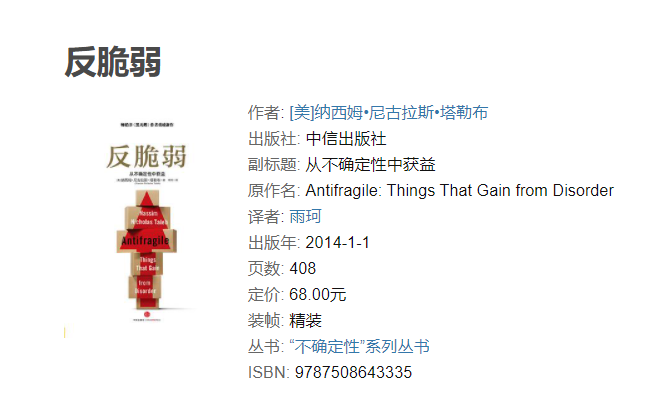
最后修改于 2021-01-01